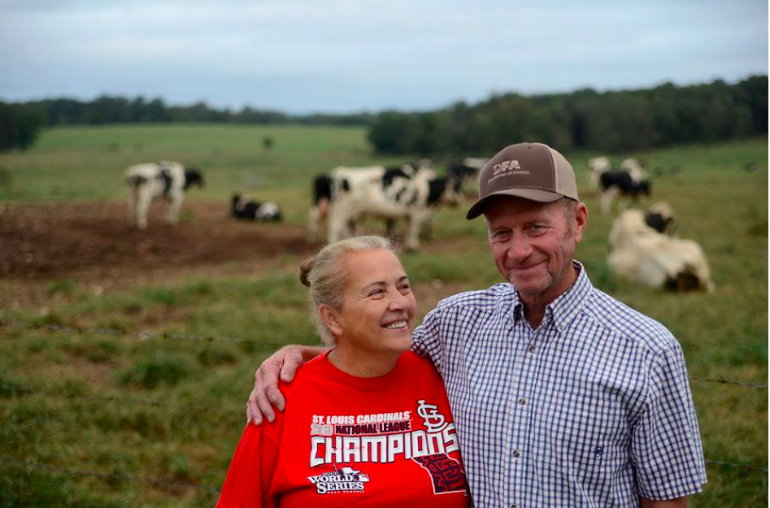
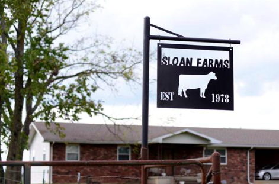
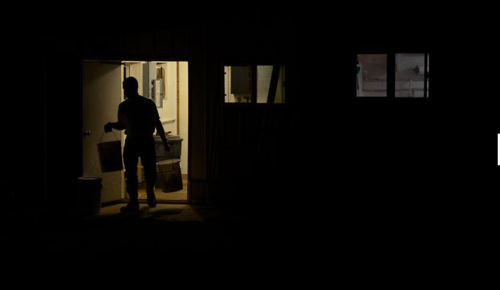
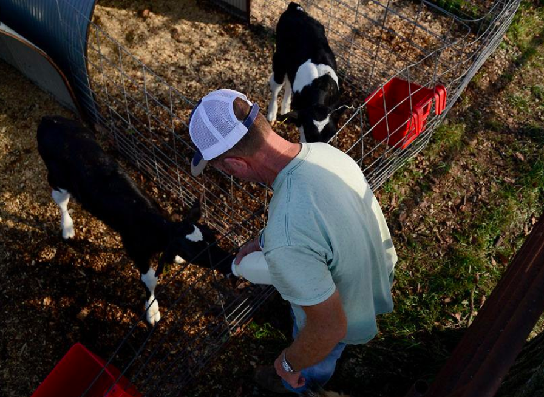
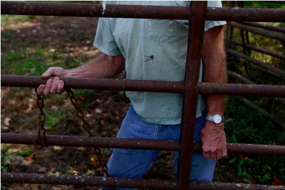
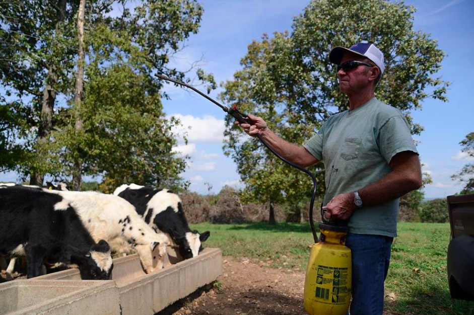
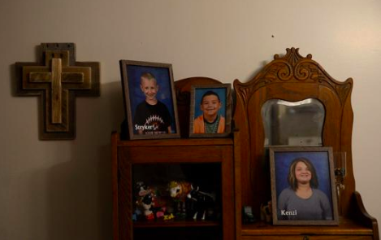
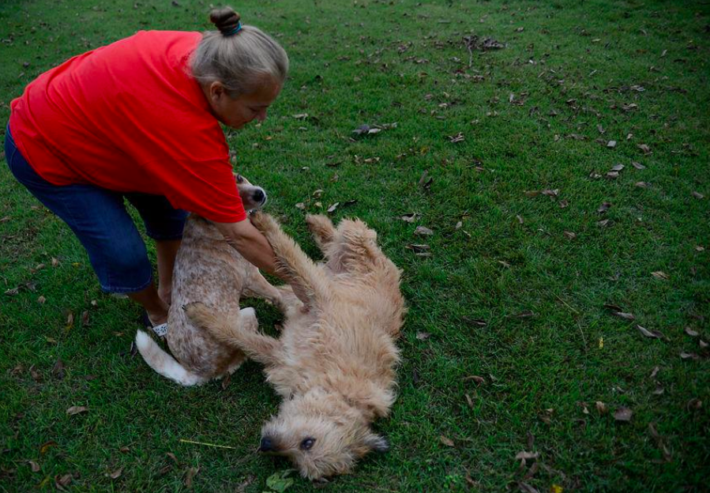
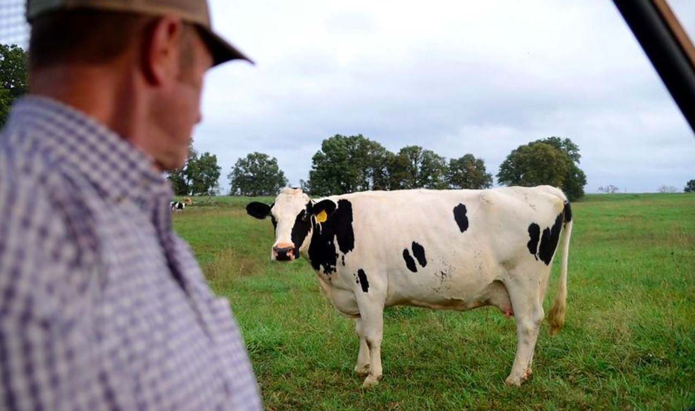

MOUNTAIN GROVE — Like a whisper, the first of the fall leaves crunched beneath the car's tires as it drove down Route 76. Half an hour passed without a person in sight. The tires grew louder as the smooth blacktop crumbled into a rough gravel road. A quaint house, a sleeping cat and two eager dogs with wagging tails appeared just past a row of trees. Behind them, more than 100 Holstein dairy cows roamed across hundreds of rolling acres. Norris and Annette Sloan call this 700-acre farm home.

Forty years ago, you could drive down that same country road and see 30 dairy farms in a 2-mile radius, Norris Sloan said. Now, you would see only two. To drive down the gravel road to Norris and Annette Sloan’s farm is to drive into an era that is fading.The reality is this: Missouri's dairy industry is shrinking. Larger dairy operations skew the economies of scale that small dairy farmers are so used to operating on. There's an oversupply of milk in the country, and milk prices are falling. The cost of becoming competitive is much larger than the size of the paycheck. The job is too labor-intensive to interest a young person. And the Sloans are getting older.

"These things have plagued me, and we — me and my wife — can see it coming," he said. The Sloans understand they'll have to come up with a retirement plan soon. This might mean shutting the doors to the farm, adding another to the long list of small dairy farms disappearing in the state. They hope they can live off of the money they make from the farm, but its worth continues to decrease alongside the industry. With every small dairy farm that folds, a larger operation gains more opportunity. But Missouri doesn't have many of these large operations — maybe a dozen. That creates less economic activity in Missouri and more in other states. For those who cherish the idea of buying locally grown products, that may one day be a thing of the past. The questions some are starting to ask are, do we have to produce the milk we consume? Is the industry worth saving? "I can see somewhere down the road in 10 or 15 years, Missouri is going to be wondering where our milk is going to come from, because we have no milk in our state," Sloan said. "Maybe consumers don’t care about that."
Where Missouri stands
Missouri isn't the first state that comes to mind when someone says "dairy." Wisconsin, New York, California, sure. But not Missouri — and there's a reason why. The state's dairy cow count ranked 25th in the country in 2018, and the state ranked 26th in total milk production last year, according to an MU study. From 2000 to 2014, the number of commercial dairies fell 45.5 percent. The number of milk cows in the state has also been on the decline since the early 1990s. As of January, there were roughly 84,000 milk cows in Missouri. In 2000, there were 158,000, according to data from the United States Department of Agriculture. When Norris Sloan entered the dairy industry in 1978, there were more than 280,000 cows in dairy farms across the state.

Compared to other states, this isn’t a high count. There were over 1.7 million cows in California and over 1.2 million cows in Wisconsin in August 2018. Missouri tends to be a state with smaller dairy operations, which are less likely to update technology and increase marketing, said Scott Brown, an MU professor in agricultural and applied economics. There aren't many large operations."If we’re not going to see the influx of large operations in Missouri, then we’ll continue to shrink," Brown said. "For every dairy operation that leaves Missouri, there’s one that’s much bigger that’s probably going in somewhere else in the country that offsets the decline in Missouri." The industry is considered a small portion of the state’s agriculture sector. The dairy industry generated $228.5 million in milk cash receipts in 2016, which was 5.5 percent of the total livestock cash receipts. In 2017, Missouri milk production was worth $231.8 million, according to a USDA report. Whenever a dairy cow leaves Missouri, the state loses about $14,000 of economic activity, MU Extension economist Joe Horner said. That means when a 100- to 120-cow dairy farm closes, Missouri loses over $1.5 million of economic activity, he said. Missouri is also milk deficit, which means there is not enough milk being produced in the state to meet all of the consumers' dairy product needs, including fluid milk, cheese, butter and ice cream.

Missouri was producing 1.2 billion pounds of milk in 2017, according to USDA data. But with a population of 6.1 million Missourians who, individually, consume 643 pounds of dairy products each year, the state would need to produce 3.92 billion pounds of milk for its consumers. Milk is recorded in pounds, not gallons. In an attempt to revive the industry, the Missouri General Assembly passed the Missouri Dairy Revitalization Act in 2015. It was designed to help Missouri dairy producers offset the cost of federal premiums, encourage young people to join the dairy industry by way of a scholarship and to take a deeper look into what was affecting the industry. It was created to work alongside the 2014 federal farm bill. Funding was cut, though, under former Gov. Eric Greitens’ administration, Rep. Bill Reiboldt, the bill’s sponsor, said.But it wasn't helping anyway. There's been a steady decrease of the number of milk cows in the state since the act was passed. Reiboldt, R-Neosho, said some things are just too little, too late. Reiboldt and his wife both grew up on dairy farms, and they owned a farm before he was elected. The industry would need large monetary support from the state and federal governments to help small dairy farmers, Reiboldt said, and he doesn't see the state approving that appropriation anytime soon. Horner and Brown were the head researchers for a Missouri Dairy Revitalization study, which was funded through the act. The study said that Missouri is forecast to drop to 257 dairy farms by the end of 2024. There were almost 900 farms in 2014. To maintain cow and production numbers, the study said each dairy farm would need to milk around 350 cows by 2024.
Got milk? The U.S. does
The United States is swimming in milk. In 2017, the country was producing 215 billion pounds of milk, 1.2 billion of which was produced by Missouri dairy cows. While Missouri doesn't provide enough milk for its residents, the country currently has an oversupply. And with external factors like trade wars, we’re watching good milk go sour. "We’ve gone through a horrific time economically in the dairy industry," Brown said. The overall milk supply grew by 3 billion pounds between 2016 and 2017, as the total cow count grew by about 70,000, according to data from the USDA. As a result, retail milk prices have dipped since the beginning of the year. In Kansas City, you could go to the store in January and buy a gallon of whole milk for $4.20. In September, you could have taken home the same milk jug for $3.93, or you could have bought a gallon of 2-percent milk for $3.64, which was originally over $4. The average U.S. citizen was consuming an average of 643 pounds of dairy last year, the USDA reported.

With about 325.7 million people in the country, that means the U.S. would need to produce approximately 209 billion pounds of milk for consumers, but this year it produced 6 billion pounds more than that. And with the trade dispute between the U.S., China and Canada, the U.S. has had to figure out what to do with the surplus. Milk can’t be saved — it has to be in grocery store refrigerators within four days of leaving the cow. Some milk can be processed into butter, cheese or ice cream, but it depends on the fat content.Small dairy farmers say they can’t keep producing with the paychecks they’re receiving, and as they close their doors, the larger dairies continue to grow and add to the country’s oversupply.Horner said the U.S. will probably lose between 5 and 10 percent per year of the dairy operations in a lot of the traditional dairy states. That's because there are many farmers who are close enough to retirement, and know they can't compete, that they may make the transition out of the industry amid low milk prices, he said.Consolidation has been a longtime threat to agriculture, but especially to the dairy industry. Missouri has fallen further and further behind in the size of our dairies compared to the national average, Horner said.
“Our numbers are actually smaller than a lot of the surrounding states simply because our milk production per cow in Missouri is quite a bit smaller than the national average,” Horner said. Our cows tend to be raised mostly on grass and forages instead of inside a free-stall barn and fed total mixed rations, he said. A free-stall barn is filled with bedding separated by metal bars, like cow cubicles, that ensures each cow has a place to rest. These problems have haunted the dairy industry for years. And farmers were hit with other obstacles this year that caused production to shrink. Missouri was plagued with a drought this year. Gov. Mike Parson declared a drought alert for 47 Missouri counties and called for an activation of the Drought Assessment Commission. A state drought plan provided farmers access to 28 conservation areas and five state parks to pump water to use on their land. By late August, 88 percent of the state was experiencing some degree of drought. This posed a problem for farmers who use pastures to feed livestock. "We rely so much on pasture and grass for our feed, so when we don’t have it, we have to find sources out of state, which is expensive," said Dave Drennan, executive director of the Missouri Dairy Association. Earlier this year, the Trump administration imposed tariffs of 25 percent on steel and 10 percent on aluminum. In response, Mexico increased tariffs on U.S. dairy products of up to 25 percent. After a long battle, the U.S. reached an agreement that maintains zero tariffs on products traded between the U.S. and Mexico, said Missouri Department of Agriculture Director Chris Chinn in a news release. The agreement also offers opportunities for American dairy producers in Canada. Dairy farmers are hopeful that the oversupply of milk will be relieved soon, now that dairy products are leaving the country again. U.S. Secretary of Agriculture Sonny Perdue announced in July that the USDA would return up to $12 billion through programs for farms affected by the trade problems. Norris Sloan said his check would be about $700. “We’ll certainly take it," he said, "but as far as putting us over the hump ... That’s not going to.”
Declining profits
Two houses sit on a 580-acre farm in Peculiar, Missouri, where the Fogle family has been making memories and milking cows for almost 90 years. The homes are made of hand-laid bricks that are from the original barn Jay Fogle's greatgreat-grandfather built in 1930. A Cass County dairy farm just closed this month, meaning there are only two dairy farms left, including Fogle Farm. And the other is considering closing, he said. Dairy farming isn't a trade for the weak hearted — the cows have to be milked every 12 hours, 365 days-a-year.

Jay Fogle and his parents work on the farm day-in and day-out with the help of his sons, Javen and Jackson. They milk about 70 cows a year, maintain a beef herd, run a bakery and grow corn, soybeans and alfalfa hay just to get by. But it wasn't always this way."We have had depressed prices for so long, it's almost come to a way of life," Janice Fogle, Jay's mother, said. "We feel that we're good dairy farmers, but there's a lot of good dairy farmers that aren't dairying anymore."In August, U.S. farmers were paid an average of $15.90 per hundredweight of milk, or per 100 pounds. In 2011, those same farmers were receiving $20 per hundredweight, according to USDA data. Dairy cows aren't worth as much as they used to be. Farmers say that selling the farm isn't as much of a cash-surge as they would hope for. Sloan said he might profit 45 cents per pound for one cow, which averages to about $600 per cow. Sloan and his wife, Annette, remember when he could sell a cow for a couple thousand dollars."We used to be able to sell a cow and help pay for college. We couldn’t now," Annette Sloan said.

The Fogles have diversified their farm by growing crops and maintaining a beef herd, but they're still struggling to make it."Each month it just seems to be harder and harder to take care of the bills," Jay Fogle said. Dairy producers have been told to adapt their farms with new technologies to become more competitive. But when you can barely afford to continue farming, how can you afford new technology? The cows on Fogle Farm are free to roam the pastures as they please, but they also have the opportunity to stay in a barn in the heat of the summer or the dead of the winter. This upgrade cost the Fogles about $50,000, Jay Fogle said.“If I was a cow, I’d want to live here,” said his wife, Angela. When a machine breaks down, the Fogles turn to YouTube instead of a mechanic. When a tractor needs diesel, they only pay for what they know they will use. And Jay's kids understand that this is the way it is. Jackson Fogle said he wants to be the family's fifth-generation dairy farmer. He loves helping out on the farm and the thought of possibly handing the farm off to a sixth-generation makes him proud, he said."I would love for him to stay and be a dairy farmer with me, but the margin that we deal with," Fogle said, "it's hard to wish that upon your kid."
Hope on the horizon
Missouri dairy farmers say they need help, but they aren't calling on the state to act.Kelly Smith, director of marketing and commodities for the Missouri Farm Bureau, said assistance is more effective through the federal government. Congress is working on passage of the 2018 farm bill, which would include support for rural development and other programs that could benefit dairy farmers. The 2014 federal farm bill, which expired at the end of September, created the margin protection program, or MPP. That program offered dairy producers protection when their margin fell below a certain dollar amount. But farmers say the program failed to deliver. The Missouri Dairy Revitalization Act was created to run alongside the farm bill and encourage farmers to participate in the MPP.Cornelius said the Missouri act was a “great gesture, but it didn’t do a lot of financial good.” He said the MPP didn’t work, and after farmers realized this, there was no reason to participate.I think the hope was that that was going to create a more effective safety net for dairy producers across the country. It didn’t,” Brown said. “Changes under the 2018 farm bill might make it a more effective safety net.”The 2018 farm bill is drafted to make the MPP a more effective safety net for producers of all sizes, and to keep it flexible and affordable, said Ashley Ellixson, the vice president of legal and environmental affairs for the United Dairymen of Arizona. Right now, farmers can't use the MPP concurrently with other programs, but Ellixson said the proposed farm bill likely would make it possible for farmers to use the MPP with other risk management tools. "It looks like dairy is at a pretty good spot to end up with both of these goals," Ellixson said. Brown said there should be a balancing act between the federal bill and state policy to better help Missouri farmers. “That’s really important to answering why what we passed in 2015 didn’t work as well as it should have," he said. Until the late 1980s, there was a government program that purchased dairy products when they went below a certain price. This was designed to create a new market for dairy products and increase milk prices, which resulted in little to no volatility. That changed when Congress began signing farm bills, which created a more market-oriented federal dairy policy, said Brian Gould, professor of agribusiness at the University of Wisconsin-Madison. Today, milk prices are more volatile than in the '80s. That's because of the way federal officials reformed something called "milk marketing orders." The orders, which have been around since 1937, ensure a reasonable minimum milk price for dairy farmers and provide consumers with an adequate milk supply, according to the USDA. The federal milk marketing order reform in 2000 made prices more volatile, Gould said.

After the reform, the minimum value of milk became based on the value of the components in that milk, such as fat content. That has resulted in a dramatic increase in milk price volatility, Gould said. "Since the mid-90s, we've had a dramatic increase in volatility," Gould said. "Some months it goes up, some months it goes down. We can have within a six month period a 25 to 30 percent increase or decrease in milk prices." Some Missouri farmers think it might be beneficial to take a page from Canada’s book. Canada operates its dairy industry under a supply management system, which allows Canadian dairy farmers to negotiate prices and adjust milk production alongside consumer demand, according to the Dairy Farmers of Canada website. This means farmers are able to act independently from the government and other programs to produce and sell their milk, while ensuring there isn’t an oversupply in the country. This eliminates the need for dairy handlers and co-ops. “There’s a lot of support for supply management on the ground level, but when you get to the middle man, there’s no support," Norris Sloan said, "because they love being able to buy cheap milk.”
What's next?
The future is becoming cloudy for some multi-generation family farms. For others, the future is clear: They won't be dairying anymore. Some wonder whether it's worth what it would take to revive the industry. Reiboldt, the state representative who sponsored the Missouri Dairy Revitalization Act, will leave office in December. He said he doesn’t think there’s anything the state can do for the dairy industry. “I don’t see us going back to that 80 to 100 cow dairy like we once were looking at,” Reiboldt said. “Is it worth saving? To prevent from losing so many smaller dairy farmers? I don’t think so … the industry as a whole is dying out.” For some farmers, Reiboldt's outlook is no surprise. "We worry about the future," Sloan said. "Especially the fact that we’re reaching retirement age. The cows were going to be our retirement plan, and now that's (the farm's value is) one-third of what it used to be," he said. "Our retirement is looking pretty slim."

For Norris Sloan, there are memories on his farm. His two children, who are now grown, were raised there. His daughter lives in southeast Missouri and owns cattle herself, though neither of his children would be interested in taking over the family farm. That much he knows to be true. "The money to be made is so slim, and the workload is so hard. If you didn’t love it, you wouldn’t stay with it." For now, Norris and Annette Sloan will continue to work seven days a week, as they have for the last 40 years. Their muscles ache, their bodies are tired, but it's what they love to do. And they hope to continue doing it. "I hope my grandkids can drink milk someday that was produced within 100 miles of where they live," Sloan said.